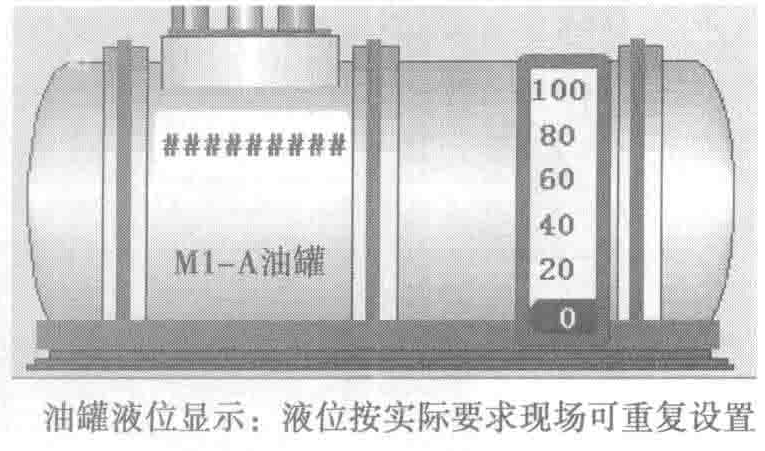
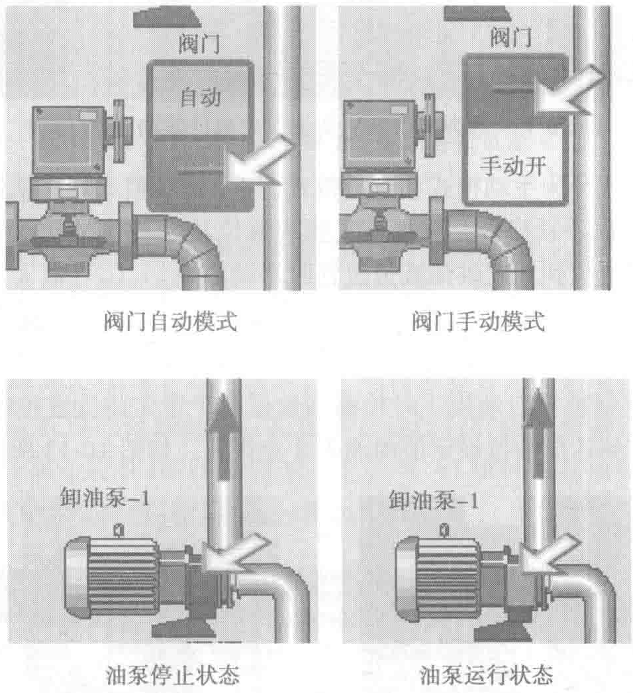

告警信息：液位告警信息、运行及故障信息均可在现场和运维监控室监视到，关键信息均联动声光报警器发出警告。

卸油泵自动启动条件：火警触发卸油泵启动，火警信号撤除或油箱液位达到低限位设定值时卸油泵延时停泵（见图10-14和图10-15）。
其他配套设施：泵房内设置有消防及危险性监控装置、排水设施、通风设施、照明及疏散措施等。

4）在线检修维护供电系统
当其中一路变压器或低压供电模块检修维护时，由柴油发电机组供电，经低压侧ATS切换至计划性维护电源负载回路。采用柴油发电机组供电方式可以很好地避免变压器占用容量费用问题及消化柴油存储过期问题。存在的难点就是需要经验丰富的技术工程师进行全程监管式操作。
模块楼计划性在线检修供电系统示意如图10-16所示。
3. 模块内10kV配电系统（见图10-17）
市电10kV金属铠装移开式开关柜采用行业一线品牌原厂柜（见图10-18），配置一套独